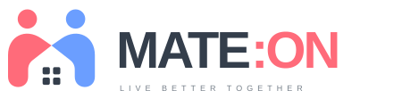
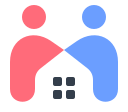
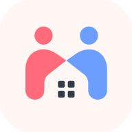

따뜻한 코랄과 차분한 블루가 만나 집을 만듭니다.두 사람이 마주하는 모습에 M과 지붕을 담고,작은 네 칸의 창으로 함께할 일상을 표현했습니다.



#FF6B7A · 따뜻한 시작
#6B9EFF · 서로의 신뢰
#FFDCD1 · 친밀한 일상
#A7E3D1 · 편안한 균형
#343E4B · 명확한 소통
심볼 주변에는 머리 원 지름 이상의 여백을 권장합니다. 작은 화면에서는 심볼을 단독 사용하세요.조합형 SVG의 워드마크는 시스템 폰트로 표시됩니다. 인쇄 제작 시에는 글자를 윤곽선으로 변환하세요.